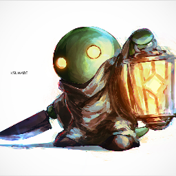
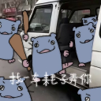
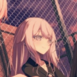

 Pintbox 第一篇 第一章~Memories in the Summer 第二篇 第二章~Turn back the Pendulum 第三篇 第三章~THE World & the world 第四篇 第四章~Everything but the Promise 第五篇 第五章~Beginning of the Death of Tomorrow 第六篇 神岡地靈緣起~Chronicle of Fading Seasons 第七篇 神岡地靈緣起~Chronicle of Fading Seasons
 旁白 第一篇 欢迎来到津守町 第二篇 迈向前方 第三篇 その扉の向こうに 第四篇 小小人偶与梦 第五篇 津守的夢祭 第六篇 樱之梦 第七篇 神观之梦 第八篇 Mega Crocodile
 藍風 第一篇 《甲子園與普通的花》 第二篇 《甲子園與春日物語》 第三篇 《甲子園與在外躊躇的人們》 第四篇 《甲子園與魔物的少女》 第五篇 《甲子園與夏天的終點》 第六篇 《甲子園與宇宙的盡頭》 第七篇 《甲子園與最後一棒》